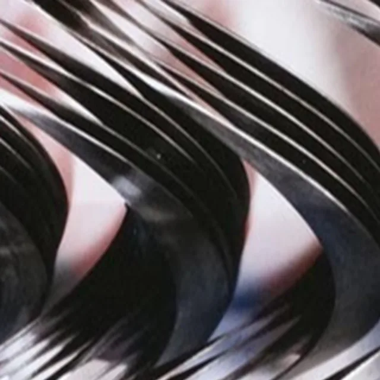
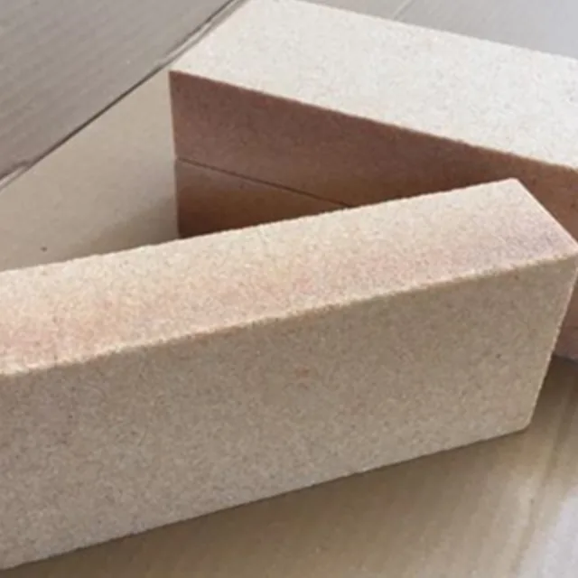
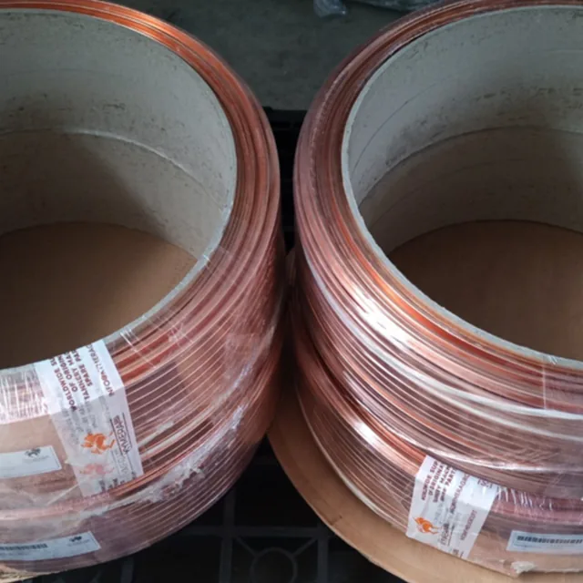
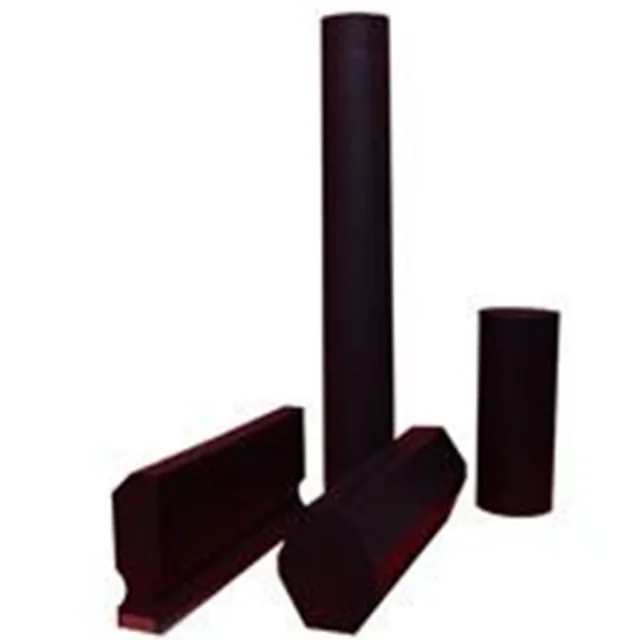
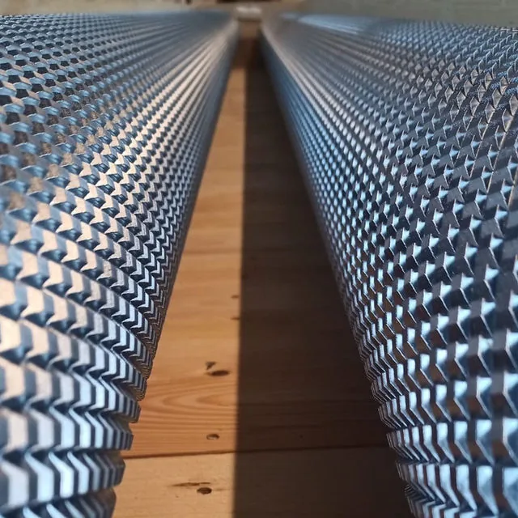
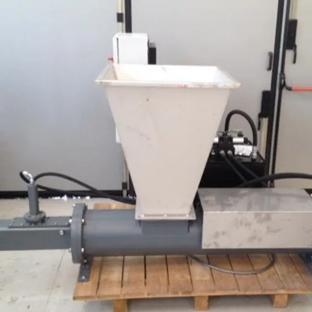
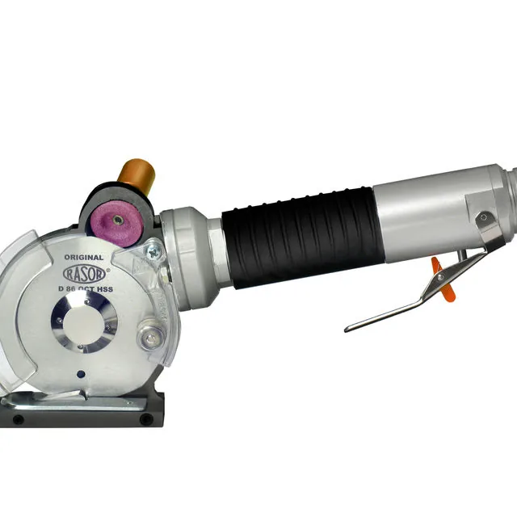
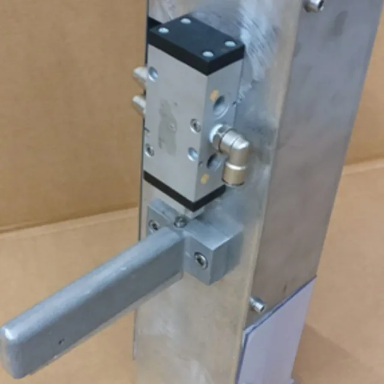
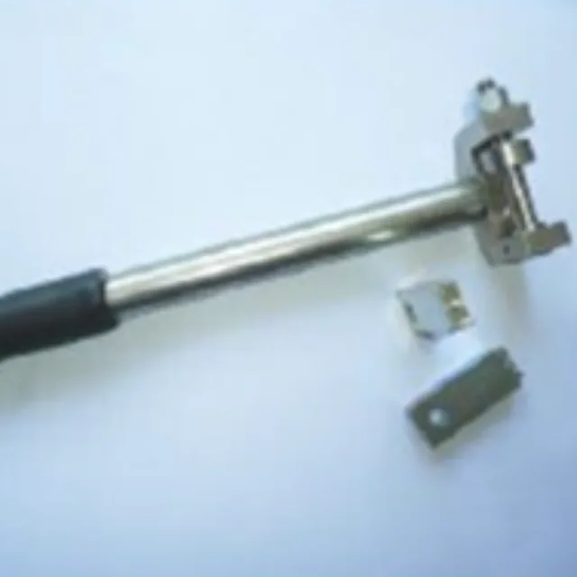
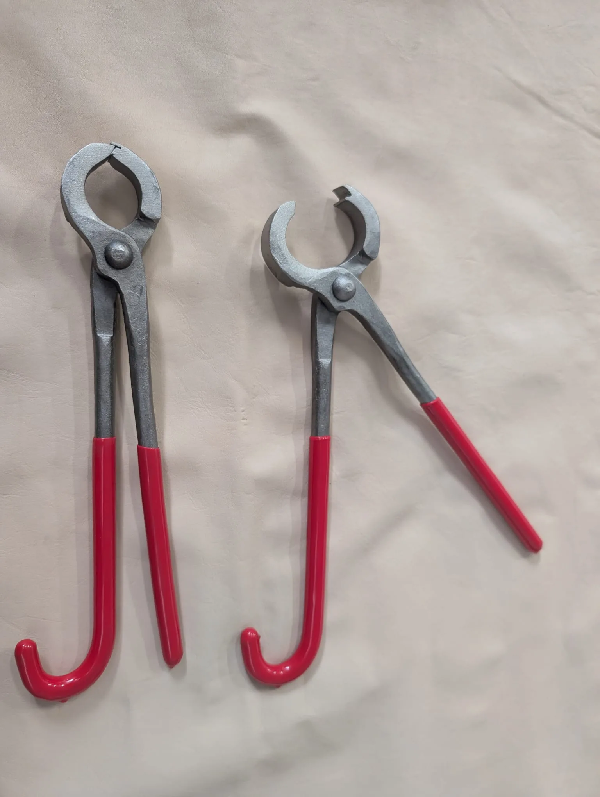

Fleshing Machine
Spare Parts
Spare parts and consumables for leather fleshing machines — helical fleshing blades, grinding bricks, copper caulking tape, rubber bolsters, extraction rollers, fleshing pumps, pneumatic trimmers and marking hammers. Matched to your machine and quality-checked before they ship.
Reduce Downtime
Keep a spare fleshing blade, rubber bolster, grinding brick and copper tape on the shelf. When a blade dulls or a bolster nicks, swap the part and your beamhouse line is back in production in minutes, not days.
Clean, Even Flesh
A sharp, true blade and a sound bolster at the right pressure shave the flesh side evenly across the whole hide — a clean, uniform thickness that protects splitting and shaving downstream.
Matched To Your Machine
Blades, bolsters, rollers, pumps and tools identified against your exact brand and model — original and compatible. Blade length and tooth profile matched to your hide, with no minimum order.
Spare Parts for
Leather Fleshing
Kymera Group supplies spare parts and consumables for the fleshing machines used in the beamhouse to remove the flesh, fat and connective tissue from the flesh side of the hide. A rubber bolster presses the hide against a fast-rotating cylinder of helical blades, which shave the flesh side clean and even — essential preparation before splitting, tanning and the rest of the process.
From the helical fleshing blades, grinding bricks and copper caulking tape that keep the cut sharp and true, to the rubber bolsters, extraction rollers and fleshing pumps — and the pneumatic trimmers and marking hammers for the line — we source the right component for your specific machine. Tell us your brand, model and hide, and we'll match the part and quote it for you.
The Complete
Fleshing Machine Catalogue
From helical fleshing blades, grinding bricks and copper caulking tape to rubber bolsters, extraction rollers, fleshing pumps and the trimmers and marking hammers for your line — matched to your brand and model and quality-checked before dispatch.

Fleshing Blades
Helical blades for the rotating cylinder that cut and scrape the flesh, fat and connective tissue from the flesh side of the hide. A wear part, supplied in the right length and tooth profile for your machine.
Request a Quote
Grinding Brick
Abrasive brick that hones the spiral blade in place as the cylinder turns, keeping a keen, even cutting edge across the full working width — without removing the blade.
Request a Quote
Copper Caulking Tape
Copper tape wound under the helical blade to bed and seal it onto the cylinder, holding the blade true and tight for a clean, even cut across the hide.
Request a Quote
Rubber Bolster
The rubber pressure roller that presses the hide against the blade cylinder and carries it through at constant pressure. Resists cuts and swelling; renewed when worn for a clean, uniform flesh.
Request a Quote
Extraction Rollers
Wringing rollers that squeeze water out of the hide as it passes through, sammying the leather and helping clear the fleshings — for a cleaner, drier hide off the machine.
Request a Quote
Fleshing Pump
Pump that feeds wash water and clears the fleshings slurry from the machine, keeping the cut clean and the waste moving steadily off the line.
Request a Quote
Pneumatic Trimmer
Handheld pneumatic trimmer for cutting ragged edges and surplus off the hide quickly and cleanly — a fast, low-effort tool for the beamhouse and trimming bench.
Request a Quote
Pneumatic Marking Hammer
Pneumatic marking hammer to stamp and identify hides quickly on the line — clear, repeatable marks with minimal operator effort.
Request a Quote
Manual Marking Hammer
Manual marking hammer for stamping and identifying hides by hand — a simple, dependable tool for marking and sorting.
Request a Quote
Hide Handling Tongs
30cm tongs with a curved handle for a firm, non-slip grip when pulling hides out of lime (trippa) or pickle vats. Built for wet beamhouse conditions.
Request a QuoteBlades & Fleshing Action
The blade cylinder is the heart of the machine: its helical blades, their sharpness and the bolster pressure decide how clean and even the flesh side comes off. These are the working principles and the parts that keep the cut true.
Bolster Against Blade
The hide is pressed by the rubber bolster against a fast-rotating cylinder of helical blades. The blades shave the flesh, fat and connective tissue off the flesh side, leaving a clean surface of even thickness.
The Spiral Blade
The helical blade runs the full width of the cylinder, bedded and sealed with copper caulking tape so it sits true and tight. Its profile and sharpness set how aggressively and cleanly the flesh side is cut.
Grind & Re-Bed
The grinding brick hones the blade in place as the cylinder turns, restoring a keen, even edge without removing it. Copper tape keeps it seated; when it can no longer be ground clean, the blade is replaced.
Green Fleshing
Carried out early on fresh or soaked hides before liming, to remove the bulk of the flesh and fat and help chemical penetration. Blade and bolster pressure are set to the firmer, un-swollen hide.
Lime Fleshing
Carried out after liming, when the hide is swollen, for a cleaner, more uniform result. The same machine handles it — the blade, pressure and feed are adjusted to the softer, swollen pelt.
Bolster & Extraction
The rubber bolster carries the hide at constant pressure while the extraction rollers wring out the water. A sound bolster and true rollers keep the flesh even and the hide drier off the machine.
How clean and even the flesh side comes off is set mainly by the helical blade — its sharpness, profile and how true it sits — with the rubber bolster pressure and feed doing the rest. The blade is honed with the grinding brick and re-bedded with copper caulking tape, and replaced when it can no longer be ground to a clean edge. We match blades, bolsters, rollers and pumps to your machine and hide so the line fleshes clean and even again.
Fleshing, Step by Step
The fleshing machine shaves the flesh side of the hide clean and even between a blade cylinder and a rubber bolster — the key beamhouse step before splitting and tanning. Here is the cycle on the floor.
Feed & Grip
The hide is fed in flesh-side down; the rubber bolster presses it against the blade cylinder and carries it through at constant pressure.
Shave The Flesh
The fast-rotating helical blades cut and scrape the flesh, fat and connective tissue off the flesh side to an even thickness.
Extract & Clear
Extraction rollers wring out the water while the pump clears the fleshings slurry — leaving a cleaner, drier hide.
Trim & Mark
Ragged edges are trimmed and the hide is marked and stacked — clean, even and ready for splitting or tanning.
Your Questions,
Answered
What does a fleshing machine do?
A fleshing machine removes the flesh, fat, membrane and connective tissue from the flesh side of the hide. The hide is pressed by a rubber bolster against a fast-rotating cylinder of helical blades, which shave the unwanted tissue away, leaving a clean, even flesh side of uniform thickness. It is a key beamhouse step — usually on green (fresh or soaked) or limed hides — before splitting, tanning and the rest of the process.
How do the blades and rubber bolster work together?
The helical blades are mounted on a rotating cylinder and bedded onto it with copper caulking tape that holds them true and tight. The rubber bolster presses the hide against the spinning blade cylinder and feeds it through at constant pressure, so the blades shave the flesh side cleanly and evenly. Blade sharpness, bolster condition and pressure together decide how clean and uniform the fleshing is.
How are the fleshing blades kept sharp?
The helical blade is honed in place by a grinding brick that runs against it while the cylinder turns, restoring a keen, even edge across the full width without removing it. The copper caulking tape under the blade keeps it seated and true. When the blade is worn beyond grinding it is replaced — a sharp, true blade is what gives a clean cut without damaging the hide.
What is the difference between green and lime fleshing?
Green fleshing is carried out early, on fresh or soaked hides before liming, to remove the bulk of the flesh and fat and help chemical penetration. Lime fleshing is carried out after liming, when the hide is swollen, for a cleaner, more uniform result. The same machine handles both — the blade, bolster pressure and feed are set to the state of the hide.
How often do blades and rubber bolsters need replacing?
The blade is honed regularly with the grinding brick and re-bedded with copper tape; when it can no longer be ground to a clean edge it is replaced. The rubber bolster takes the cut and the swelling of the hide and eventually nicks, hardens or wears, which shows up as an uneven flesh — it is renewed on a schedule. Extraction rollers and pumps are serviced as needed to keep the line clean.
Which fleshing machine brands do your parts fit, and is there a minimum order?
Our fleshing machine spare parts and consumables are compatible with the most widespread brands of leather fleshing machines, including Rizzi, CM, Mostardini and Cartigliano. There is no minimum order quantity — a single fleshing blade, one rubber bolster or a complete consumables package, supplied with the same care.
Send Your Request
Tell us your fleshing machine brand and model, the part you need — blade, bolster, roller or pump — or the hide you process, and the quantity. We'll come back to you with the right component, the right price, and a clear lead time.